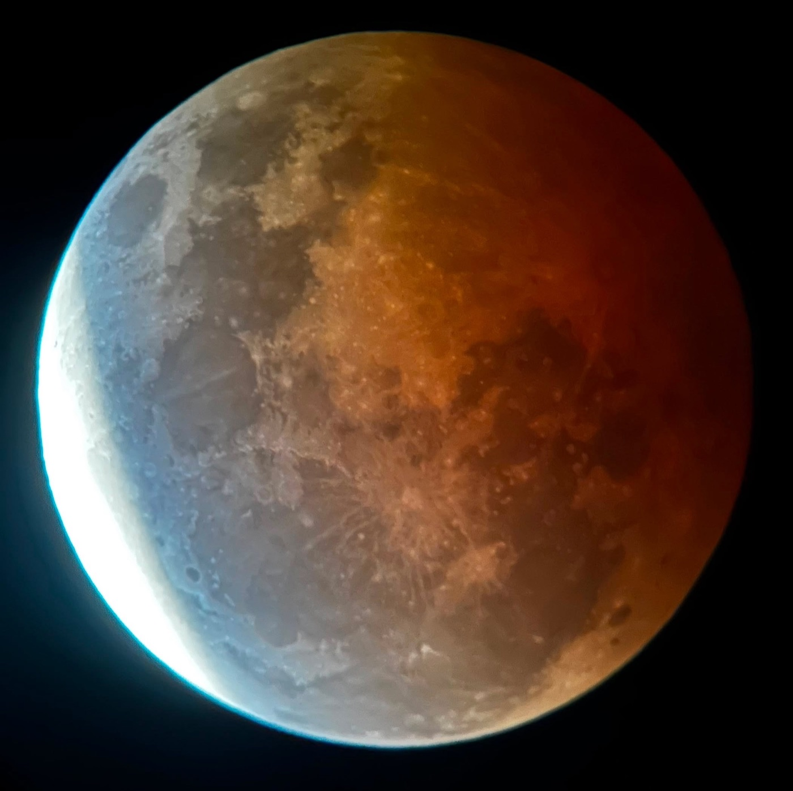

August 27, 2026
No worksheet, no assessment, nothing to submit. A telescope, a clear sky over Santa Ana, and around fifty or sixty students who stayed up to watch.
This is one of those activities I cannot plan into the curriculum. A lunar eclipse happens when it happens, and if I have the opportunity to experience one with students, I take it. The boarding-school context made this possible. I did not need to organise a trip, arrange transportation, or ask students to return to campus late at night. They already lived at the school. I set up my own telescope, told them about the eclipse, and asked whether they wanted to stay up to observe it. Around 50–60 came, including students who were not taking physics. There was no formal class, homework, or expected product. We simply went outside and watched.
For almost two hours the sky stayed clear. Students looked through the telescope, changed eyepieces, refocused it, took photographs, and talked about what they could see. About five minutes before totality, clouds rolled in over Santa Ana and covered the Moon for half an hour.
This is one of those moments that reminds me how much learning happens in unplanned situations. Not every meaningful experience needs a worksheet or an assessment. This was a proper experiential activity: we were outside the classroom, there was nothing to submit afterward, everyone could participate, and the actual astronomical event was happening above us. There was plenty of physics to discuss, the positions of the Sun, Earth, and Moon, shadows, light, and why the Moon changed colour, but it did not need to become a formal lesson for that learning to happen. Some opportunities cannot be scheduled neatly into a unit plan. When they appear, the educational value can come from simply recognising the opportunity and letting students experience the physics directly.
